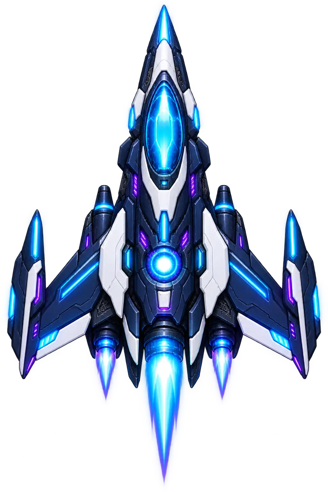

READY ROOM 系统在线
下一次出击
穿过碎片带，寻找高品质核心。每次航线节点都会改变敌群、奖励和风险。
航段01 / 05
节点交战区
种子ND-READY
脉冲猎手当前机体初始航道当前航线
可在航线图重规划
选择机体，规划航线，把每一次出击变成下一次突破的筹码。
穿过碎片带，寻找高品质核心。每次航线节点都会改变敌群、奖励和风险。

ND-07 / PULSE HUNTER先决定你想怎么赢，再把装备放进正确的槽位。
先选星区，再规划五段节点。相同种子会生成相同的分岔，方便复盘与研究。
正在生成节点组合
把一局游戏放回更大的世界里：城市、势力与废墟都在这里留下了自己的回声。
资料库会随站点版本扩充；当前内容为本机离线档案，不需要登录。
先读懂敌人的行为，再决定你的武器流派。
短而具体的打法笔记：从第一波站位，到 Boss 护盾窗口，再到三种不同的构筑方向。
每篇攻略都对应站点内真实可操作的系统，不把数值藏在看不见的说明里。
在不影响当前出击的前提下，预览五个基础装备槽与可解锁的第六模组槽，再试主武器分支和副武器组合。
把带回的星尘投入舰队系统，每次出击都能从更高的起点开始。
局内表现会转化成局外资源，逐步打开新的出击方式。
版本更新、已验证边界与世界内的频道广播，集中放在一条可追踪的时间线上。
每次远征、信号中继、深空打捞和回声实验都会留下痕迹，方便你看见真正的成长。
动作远征与小队战术是两款完整主线；四种节奏不同的短局收在同一个「小游戏」分类中。六种模式保留独立玩法与记录，奖励回流同一份档案。
《霓虹突围》是动作射击；《失落站》是回合制小队战术。小游戏各自保留独立规则与纪录。
五段分支星图上的生存射击。移动闪避、主副武器构筑、事件取舍与多阶段 Boss 组成完整远征。
三人小队逐格推进失联空间站。读取敌人预警、利用掩体、分配行动点，夺取数据并带队撤离。
反应拦截、记忆复现、风险探索、线路解码。每个模式独立开局和结算，使用各自规则，不是主战斗换皮。
主线与四款小游戏保留各自记录；星尘、舰站资源、委托和作战日志跨模式互通。
机库、星图、图鉴、攻略、构筑实验台、委托与公告仍属于同一站点。游戏之外的内容会解释规则、承接奖励并给你下一步目标。